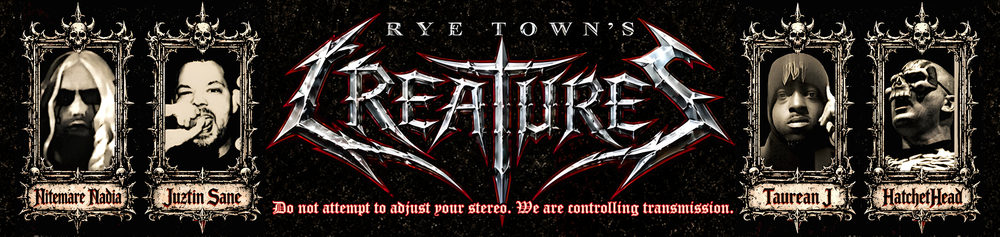

Rye Town's Creatures (also known as Rye Town Coven and abbreviated to RTC) are a gothic horror rap-rock band originally from the UK, but later expanded to featuring band members from other parts of the world. The band chose their name on the 6th June 2006, which by complete coincidence was a 666 synchronicity the band often used in their early marketting material. In 2012, the RTC disbanded with a brief revival attempt in 2016 with a new lineup, then went quiet again until 2022. In 2026, the RTC returned with a new album and the lineup that was intended for the 2016 revival. On June 6th 2026, on the 20th anniversary of their original formation, the RTC released their first album since 2012, a brand new concept album marketted as a gothic rap-rock opera: "Banquet Of Witches".